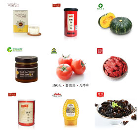

老农部落是国内首家厨房食品及优质农产品全品牌电子商务平台，是线上线下一体化运营商。
主要产品是从优质原产地采购，品牌企业所生产，全新以高品质品牌商品打造“家庭厨房食品”理念。
品牌及食材选购原则是地域性（特产）、全国性品牌产品、地方名片、产品、伴手礼、海外部分，以全球知名品牌及全球知名产地商品运营商合作采购，形成最具产品品牌特色的O2O运营商，全球采购最优质及知名品牌与日常厨房食品、消费者购买频次高的相关联产品及品牌。
为了确保老农部落产品品质，采购从源头调制，建立产品溯源体系，每一款产品都有自己的安全码及生产流通的全程追溯，优选食材种子，水、土及种、养周边环境，保证食材味道的纯正性，味道的记忆及年代感，是老农部落经典再现的选品原则。
老农部落采用会员制售卖方式，以全品牌及高品质的采购理念，确保会员及团体消费的权益。老农部落-----中国厨房食品领域中的屈臣氏！
